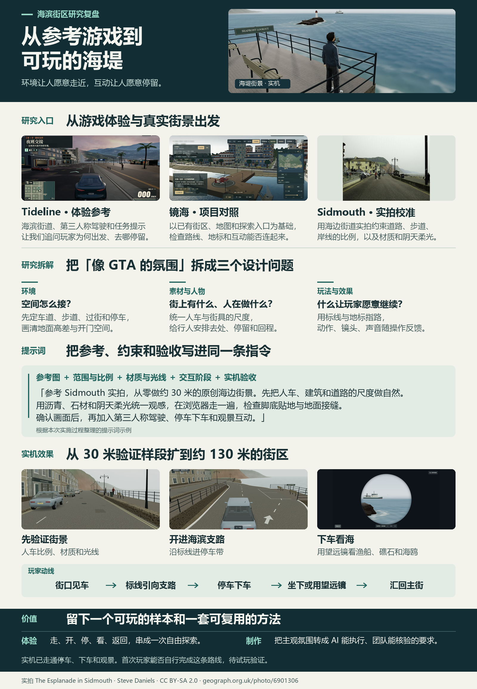
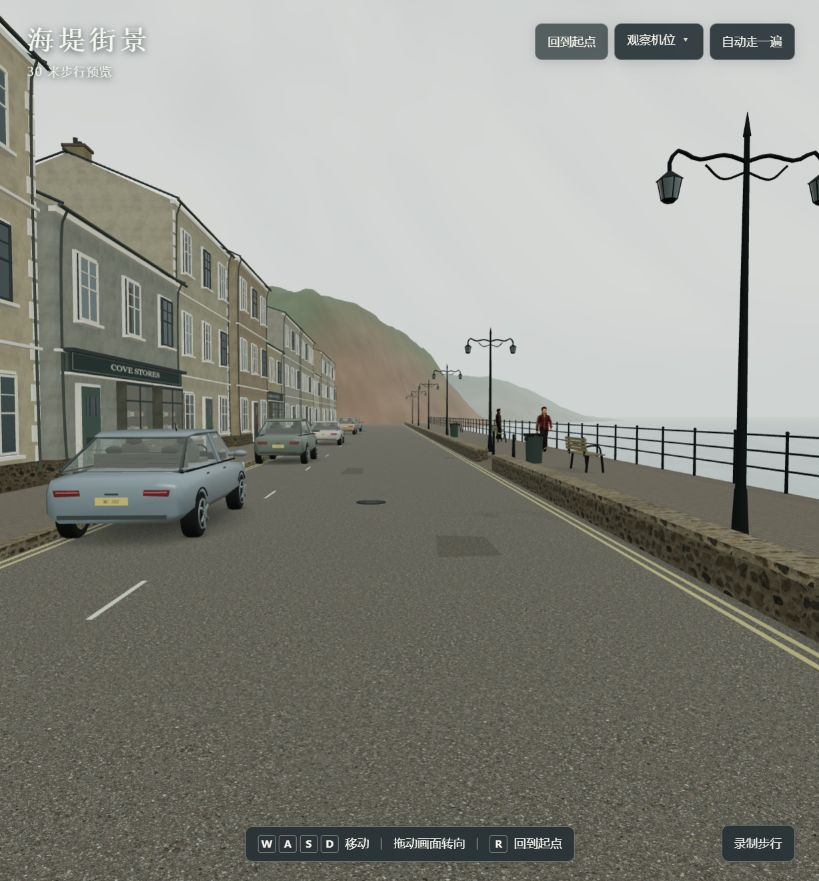
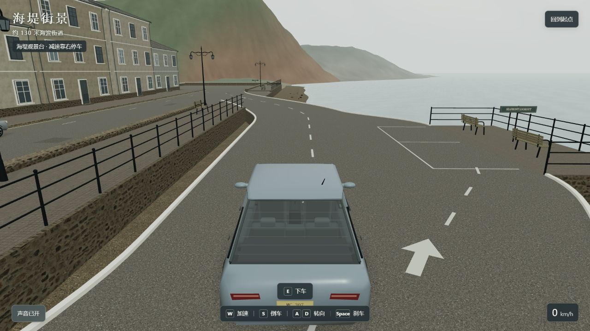
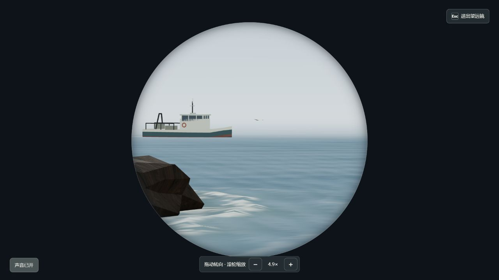

潮线失序 · 体验参考
从公开试玩观察海滨驾驶、地标、接单和到达反馈。研究依据是浏览器实玩与游戏内资料。
原版试玩 实玩拆解与截图009 · 海滨街区研究
我们从《潮线失序》拆解临海街道、驾驶与引导，对照《镜海》原仓库，用 Sidmouth 实拍校准比例和光线。30 米样段验证后，扩成约 130 米的原创街区，可以步行、开车、停车看海，再绕回主街。

参考图 ＋ 范围和尺度 ＋ 材质和光线 ＋ 交互阶段 ＋ 实机验收
参考 Sidmouth 实拍，从零做约 30 米原创海边街景。先定建筑、车道、步道和海堤的相对尺寸，用沥青、石材和阴天柔光统一观感。
在桌面浏览器里走一遍，检查脚底贴地、坡道和路缘、材质尺度与海天接缝。画面验收后，再实现第三人称驾驶、停车下车和观景互动。
检查停车时的开门空间、进出视角的过渡和动作声音。交付能打开的试玩页面和实机截图。
约 130 米海堤街区，实机走过驶入支路、停车下车、使用望远镜和返回步行的路线。



用桌面键盘和鼠标。WASD 移动或驾驶，E 上下车，靠近望远镜按 T 使用，Esc 退出。